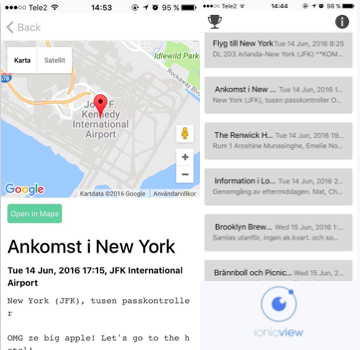

Aroshine UX Engineer test
Portfolio
Projects I'm proud of
-
Interactive Coaster
-
Pollensor
-

{Studs:16}
- User Experience
- Interface Design
- Developement
-
Clearance STHLM
Interactive coaster
×
Client
Project at KTH - Physical Interaction Design
My Roles
Problem analysis and field studies, Storyboarding, Designing, Presenting concepts
Team
Max Dyrhage, Joel Ekman, Victor Larsson, Aroshine Munasinghe & Heidi Wahl.
Time
Fall 2016
The project aimed to repurpose a coaster. Not only does it protect the table from moisture, it is also interactive in order to create an efficient service.
The interactive coaster weighs the amount of liquid in the glass and sends data to a tablet interface through WiFi using an Arduino microcontroller.
The amount of liquid was indicated using a neopixel ring. A green light for full glass, a red light for an almost empty glass, a yellow light when there is no glass on the coaster, and a purple ‘slowly circulating’ light to indicate help.
All these states are visualized on a GUI where the bartender/working staff can see where glasses are empty/full and who needs help or service.
Ideation
Based on a state of analysis to find different use cases of when a coaster is used, we started of by some initial low-fidelity sketches to represent the concepts.
Body storming
Everything looked feasible and easy in our sketches, but those same brilliant ideas might not be at all helpful when you add the human factor. Body storming is a creativity technique that we used help us visualize how the ideas would work in a real life setting. After that we realised that we needed to change some of our ideas.
Story board
We used storyboardthat to visually depict scenarios with storyboard. This complemented the earlier sketches in terms of broadening the finer details of the interaction per se,the materials and the over all "feeling" involved.

Final design
The final prototype came out using Illustrator to design our desired outcome and print the designs using a 3D printer. After hours of putting everything into the coaster, soldering the pieces and calibration, we finally had our smart coaster ready.
A short movie will be uploaded soon.
Instructable
We have published an instructable with detail further details of the coaster and the code. Within a week we got over 50 favorites and over 2000 views.
For further details check out our blog
Pollensor
×Client
Project at KTH - Interaction design as reflective practice
My Roles
This was an individual project, so I did basically everything. From the state of art, principles for interaction, sketching possible concepts, and generating an interactive prototype.
Software
JUSTINMIND PRO
Adobe Photoshop
Time
Spring 2016
Pollensor helps pollen allergy sufferers with a simple pollen detection interface. The user can see pollen levels on a map. This is made possible by a large number of pollen detectors placed at various locations throughout Stockholm. The app also has helpful features such as location search and route optimization.
How can we design attractive new solutions for the Internet of Things that are meaningful for people in their everyday lives?
The idea was born during Spring, when the pollen season had just started. Me myself, my family and some friends of mine are all pollen sufferers. So I started out doing background research about the current state of art and existing concepts in the domain.

Today there are apps in both Apple store and Google play, all very similar to each other except the layouts.
The difference with my app is that I am using pollen sensors that will give real-time analysis about the amount of pollen particles in the air using advanced sensors.
Compared to commercial sensors that are available today, this pollen sensor will be more useful especially since it can detect all sorts of pollen.
There are ongoing research about creating pollen sensor to hang on lampposts around areas in cities. The most recent research is a project called GASP (Geolocated Allergen Sensing Platform).
The application I have designed is aimed to work together with sensors that use lasers to “count” airborne particulates and determine their size as they cross the laser light’s path.
As GASP is still ongoing research, my hope is to do a collaboration with GASP and my suggested interactive prototype.
{Studs:16}
×Client
Project at KTH - Interaction Design II
My Roles
Software framework
Ionic
Time
Spring 2016
{Studs:16} is a mobile application that was used during a field trip in project called Studieresan. In 6 weeks, we built the application that helped 28 students to plan their days for their 3 weeks stay in the US.
Practicing the Model-View-Controller paradigm on a larger task that includes real data and persistence
Having only 6 weeks part-time to complete the project, our first priority was to aggressively narrow the scope of our app . By the numbers of features in control, we would have the time to work on multiple iterations.
In this project, the importance lied in having an interaction on the model data including the possibility to change the data (not only displaying it).

Priniciple: Accessible on the go
This is how our app finally looked like. The aim was to create a simple design that effectively shows the important details of the upcoming events. After an event the box becomes grey, indicating that it has ended.
To get both conceptual and usability feedback, we tested using a mix of paper and InVision prototypes. Testing it with project members from Studieresan, we tried several concepts, with the most interesting ones presented in the final version. We decided to create the application using the front-end framework Ionic.
Challenges is aimed to give motivation for the users to do fun challenges during the trip. The user can easliy choose a challenge, upload a picture, add description and tag the other users who contributed.
Final product
Our application has a high usability and a good architecture, hence the highest grade was given.
Hey there!
I'm Aroshine, a master student in Interaction Design at Royal Institute of Technology. I also have a Bachelor's in Computer Science from the same university.
Tools I use:
x Photoshopx Sketch
x Principle for mac
x InVision
x JustinMind
Basic knowledge/learning:
x Javax JavaScript
x React Native
x HTML5
x CSS3
Thoughtful design
I have a passion to create experiences through thoughtful design. I believe that a thoughtful design is where the user's emotional state in mind has been kept throughout the enitre design process.
Look for ways to make things happen
I'm a very curious person. Especially when it comes to designing and developing products, my curiosity goes to how and why things work the way they do . I'm also fascinated with human behaviour , how people think and act in different situations.
Gender Equality in Tech
I work hard to inspire and empower women to tech . Throughout the years I have worked as teamleader at Next Up Sthlm & DataTjej and currently I work as Head of Business Relations at Womengineer
I also got the opportunity to speak about Gender balance for innovation at IP Expo Nordic 2016
Dreams and goals
My biggest dream is to do my Master thesis in the US - starts in Spring 2017. In the near future I see myself working abroad as a UX engineer and get to experience different cultures .
My goal is to become the unicorn, who wants to learn more about coding, learn new aspects about visual design and ux.
Want to grab a coffee?
Let's grab some coffee (or tea, I'm game for either) and have a conversation!